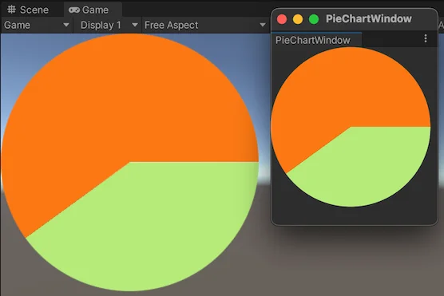

Version: 6000.5+
This example demonstrates how to use the Vector API to create graphs in the Editor and runtime UI.
This example generates a pie chart onto a VisualElement, and displays it in the Editor and runtime UI.

You can find the completed files that this example creates in this GitHub repository.
This guide is for developers familiar with the Unity Editor, UI Toolkit, and C# scripting. Before you start, get familiar with the following:
Create a C# script that uses the Arc and Fill methods in the Vector API to draw a pie chart into a visual element.
pie-chart to store your files.pie-chart folder, create a C# script named PieChart.cs with the following content:using System.Collections;
using System.Collections.Generic;
using UnityEngine;
using UnityEngine.UIElements;
[UxmlElement]
public partial class PieChart : VisualElement
{
float m_Radius = 100.0f;
float m_Value = 40.0f;
public float radius
{
get => m_Radius;
set
{
m_Radius = value;
}
}
public float diameter => m_Radius * 2.0f;
public float value {
get { return m_Value; }
set { m_Value = value; MarkDirtyRepaint(); }
}
public PieChart()
{
generateVisualContent += DrawCanvas;
}
void DrawCanvas(MeshGenerationContext ctx)
{
var painter = ctx.painter2D;
painter.strokeColor = Color.white;
painter.fillColor = Color.white;
var percentage = m_Value;
var percentages = new float[] {
percentage, 100 - percentage
};
var colors = new Color32[] {
new Color32(182,235,122,255),
new Color32(251,120,19,255)
};
float angle = 0.0f;
float anglePct = 0.0f;
int k = 0;
foreach (var pct in percentages)
{
anglePct += 360.0f * (pct / 100);
painter.fillColor = colors[k++];
painter.BeginPath();
painter.MoveTo(new Vector2(m_Radius, m_Radius));
painter.Arc(new Vector2(m_Radius, m_Radius), m_Radius, angle, anglePct);
painter.Fill();
angle = anglePct;
}
}
}
Editor to store your files.Editor folder, create a C# script named PieChartWindow.cs with the following contents:using UnityEditor;
using UnityEngine;
using UnityEngine.UIElements;
public class PieChartWindow : EditorWindow
{
[MenuItem("UI Toolkit Examples/PieChart Window")]
public static void ShowExample()
{
PieChartWindow wnd = GetWindow<PieChartWindow>();
wnd.titleContent = new GUIContent("PieChartWindow");
}
public void CreateGUI()
{
VisualElement root = rootVisualElement;
root.Add(new PieChart());
}
}
Add the pie chart in the Panel Renderer GameObject in the SampleScene. To do so, first, create a C# script named PieChartComponent.cs in the pie-chart folder with the following content:
using System.Collections;
using System.Collections.Generic;
using UnityEngine;
using UnityEngine.UIElements;
[RequireComponent(typeof(PanelRenderer))]
public class PieChartComponent : MonoBehaviour
{
PieChart m_PieChart;
void OnEnable()
{
m_PieChart = new PieChart();
GetComponent<PanelRenderer>().RegisterUIReloadCallback(OnUIReload);
}
void OnDisable()
{
GetComponent<PanelRenderer>().UnregisterUIReloadCallback(OnUIReload);
}
void OnUIReload(PanelRenderer renderer, VisualElement rootElement)
{
rootElement.Add(m_PieChart);
}
}
To view the pie chart in the Editor window, from the menu, select UI Toolkit examples > PieChart Window.
To view the pie chart in runtime: